Chat AI 和 Agent 用的是同一个大脑，区别在于 Agent 多了一个身体。大脑负责思考和语言，身体负责接触真实世界。
第 1 幕 · 什么是 Agent？
Chat AI vs Agent：从"只能说话"到"能替你做"
今天你用的 GPT、Gemini、Deepseek、豆包，本质上都是同一种东西——你打一行字，它回一段话，然后就轮到你了。它再聪明，也只是在对话框里给你文字。想真正完成一件事，全靠你自己一步步去操作。
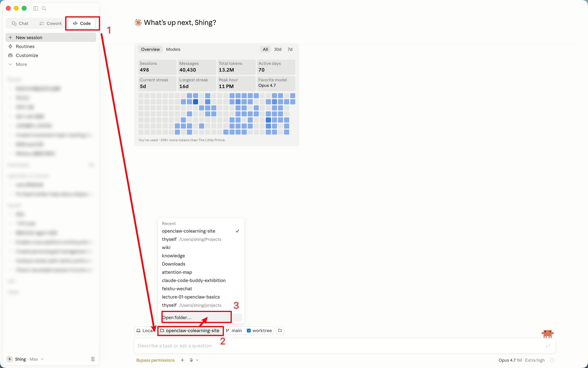
Agent 的革命性在于三个能力的叠加
第一：能自己拆任务
你说"帮我准备下周一的周会 PPT"，它会自动想到：先看上周会议纪要、再查本周项目进度、然后按模板生成幻灯片。你不需要一步步教它。
第二：有"手脚"——能调用工具
Chat AI 只能"说"，Agent 能"做"：搜网页、读文件、写代码、调 API、发消息。顾问只能口头建议，助理能真的去打电话、跑腿、填表。
第三：会自我检查和循环
做完一步，它会看看结果对不对，不对就换个方法重试，直到目标达成。这个"目标驱动 + 循环执行"的模式，是 Agent 跟 Chat AI 最本质的区别。
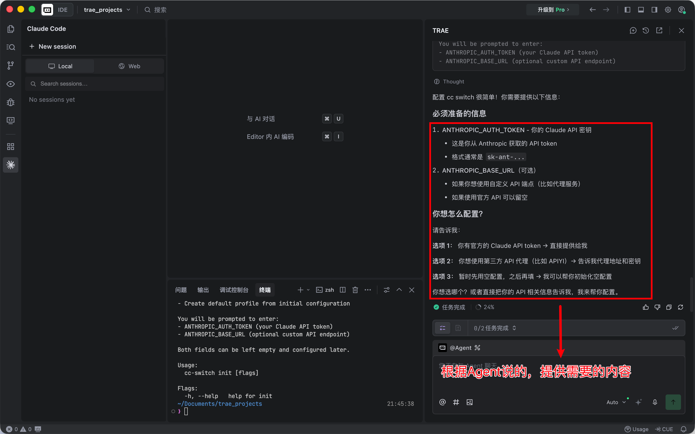
Chat AI 与 Agent 的本质区别
Chat AI：在云端，只负责对话
GPT / Gemini / 豆包背后的大模型住在远程服务器上，跟你之间只有一根"文字管道"。它没有硬盘、没有桌面、没有浏览器，什么都摸不到。
Agent：有文件系统，可以操作执行
有三样东西：一张办公桌（工作目录）、一双手（工具调用 + 代码执行）、一颗主动的心（自主循环执行到底）。

法律顾问 vs 代理律师——最好的类比
顾问和律师的脑子一样好，那为什么律师能帮你打赢官司、顾问只能给建议？因为律师有律所——办公桌能写材料、电话能联系法院、有办案流程能自己推进到底。顾问呢？就一张嘴。ChatGPT 就是只有嘴的顾问——聪明，但聊完就没了。Agent 多了工作空间、操作工具和自主推进的工作流程。
Chat AI 处理文件 vs Agent 处理文件
隔离 vs 延续。 Chat AI 的每次对话就是一间密封小房间——文件塞进去，看完就锁上。下次新房间什么也没有，得重新上传、重新交代背景。Agent 是一间始终敞开的办公室。你上传的文件、它生成的文件全在同一张桌子上。下次你说"帮我写周报"，它自己先翻一遍桌上已有的需求文档、竞品分析、会议纪要，理解完背景再动手。
第 2 幕 · 使用 Agent 的核心条件
三个条件：AI 模型、Agent 框架、文件空间
三件套：大脑 + 身体 + 工作台
AI 模型 — 大脑
Claude、GPT、Gemini、DeepSeek 等。负责理解语言、推理、规划。模型弱则 Agent 产出质量差。
Agent 框架 — 身体
Claude Code、Codex、OpenClaw、Hermes 等。负责调用工具、管理任务循环。框架弱则跑到一半散架。
文件空间 — 工作台
本地目录或云端容器。存放上下文文件、工具生成结果。资料空的 Agent 再强也是无米之炊。
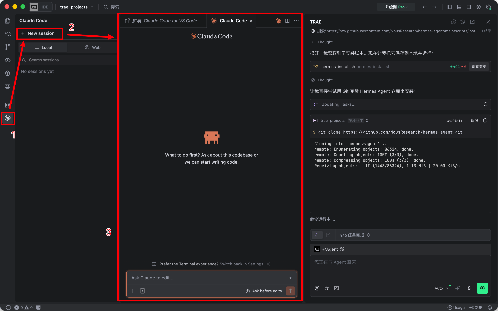
循环流程
文件空间给大脑"喂"信息
Agent 先读取工作目录下所有相关文件，理解项目背景和当前状态。
大脑做出判断和规划
模型分析信息后制定执行计划，拆解为可操作的步骤。
框架执行计划
Agent 框架调用工具、跑代码、一步步推进任务。
结果写回文件空间
执行结果被写回工作目录，大脑再读取决定下一步——如此循环，直到任务完成。
AI 模型选型
看榜单但别迷信。BenchLM Agentic 前排：Claude Mythos 5、GPT-5.5、Claude Opus 4.8、Gemini 3.5 Flash 等。但 Agent 能力不是裸模型分数，还包括具体框架怎么跑任务。SWE-bench 更接近真实代码修复场景，Terminal-Bench 直接排 agent+model 组合——同一个 GPT-5.5，放到不同框架结果也不同。
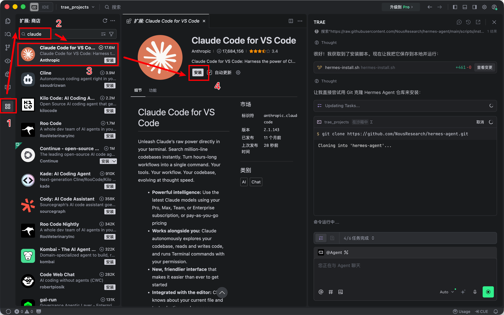
文件空间：本地 vs 云端
本地 = Agent 来你家办公
数据不出电脑，适合敏感文件。Codex 默认本地，Claude Code 始终本地靠 Git 保底回滚。
云端 = Agent 在别人办公室干活
在一次性隔离容器里运行，不影响真实环境，但文件要上传服务器。中国厂商基本都是云端方案。
五种界面形式
本地 App — 最直观
Codex 桌面版 / Claude Code IDE 集成。能看每一行变化，确认再提交。适合需要精细控制的开发者。
本地终端 — 最高效
纯文字命令行，打字最快、消耗最少。和 App 本质一样：文件在电脑上，只能在这台电脑前操作。
SSH 远程 — 易混淆
看起来跟本地终端一模一样，但你操控的是远程服务器的 Agent 和文件。
IM 聊天 — 最友好
飞书 / Telegram / 微信里直接发消息。不需要装任何东西，但看不到工作过程。
网页界面 — 折中方案
打开浏览器就能用，既能管理文件又能对话，适合团队多人共享项目空间。
第 3 幕 · 选择适合你的 Agent 框架
从顶层到底层：夯 → 顶级 → 人上人 → NPC → 拉
框架分层：从最强到最弱
夯 — 原生天花板
Claude Code（只能用 Claude）、Codex（只能用 GPT）。框架最强 + 模型最强，但锁死在自家生态。得有对应的账号订阅，费用不便宜。Agent 完成度目前就是天花板。
顶级 — 聪明人的玩法
用 Claude Code 这套最强框架，但把模型偷换成便宜的第三方（DeepSeek 等）。Trae + CC Switch 就是这个思路。框架能力不打折，模型费用大幅降低。
人上人 — 更强 Agent 工作台
Hermes Agent 不绑任何模型、自学习、越用越聪明；Trae Solo 把编辑器、终端、浏览器、文档收进同一个 workspace。理念超前但生态还在早期。
NPC — 门槛最低
OpenClaw + 国内云厂商打包方案，加上 WorkBuddy 这种办公场景桌面工作台。飞书扫码、微信直连就能用，但框架能力天花板有限。
拉 — 回到起点
ChatGPT、Gemini、豆包、Kimi——纯聊天 AI。只有大脑没有身体的法律顾问。有用，但不是 Agent。
选型路线图
- 有海外账号 → Claude Code + Codex，写代码办公都是最强
- 没有但想用最好的，没多端需求 → Trae + CC Switch，同级框架换便宜模型
- 多端设备 + 能上云 → 按办公工具选：飞书→ArkClaw、微信→QClaw、个人→看是否愿意养 Hermes
- 多端设备 + 必须本地 → 能装桌面端→Hermes Desktop，不能→AutoClaw
- 以上都不想碰 → 继续用 Chat AI
Claude Code vs Codex
"质量 vs 效率"之争。一个 Express.js 重构任务，Codex 花约 $15，Claude Code 花约 $155，但盲审认为 Claude Code 产出的代码质量更高（67% vs 25%）。Reddit 500+ 开发者调查中 65% 日常偏好 Codex，但多数专业开发者两个都用——Codex 跑量，Claude Code 做关键提交。
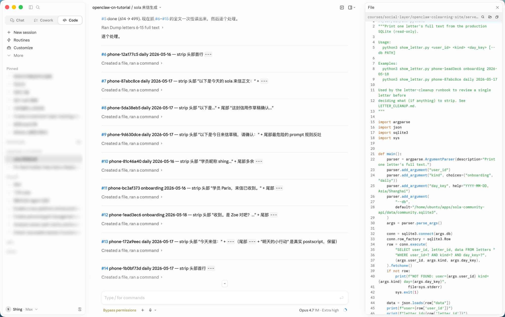
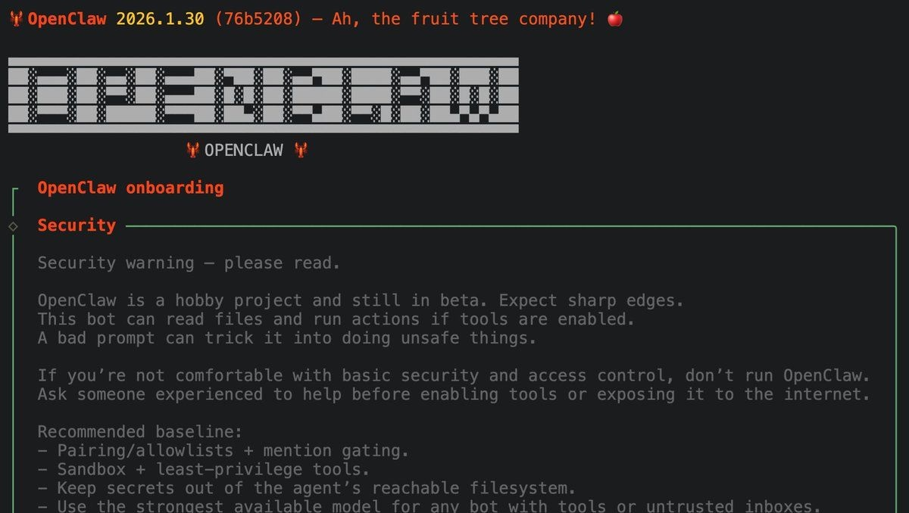
OpenClaw vs Hermes
"生态广度 vs 学习深度"之争。OpenClaw 有 354k Stars 和 13,700+ 技能但记忆脆弱、不会自学。Hermes 是目前唯一内置学习闭环的框架但生态还在早期。有意思的用法：用 Hermes 当"指挥位"，OpenClaw 当"执行位"。
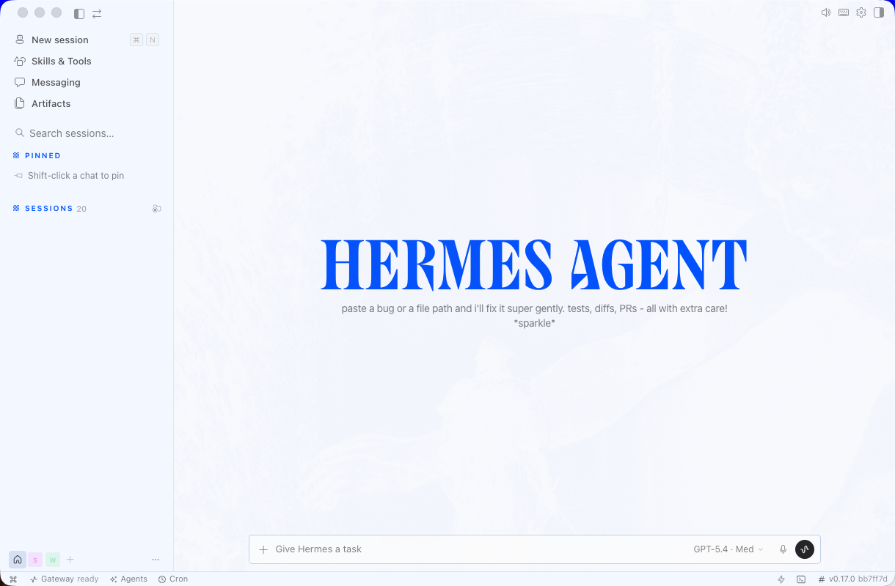
第 4 幕 · 快速开始
理解 9 个概念：注册→付费→API Key→框架→调用→Token→费用
9 个概念一条链
注册账号 → 在平台付费 → 拿到 API Key → 填入 Agent 框架 → 框架调用模型 → 消耗 token → 产生费用。
Token = 电费的"度"
订阅 = 包月不限量（有上限），API = 按度计费。Agent 框架跑起来特别费 token——一个复杂任务可能消耗几万 token，用 API 计费时要留意账单。
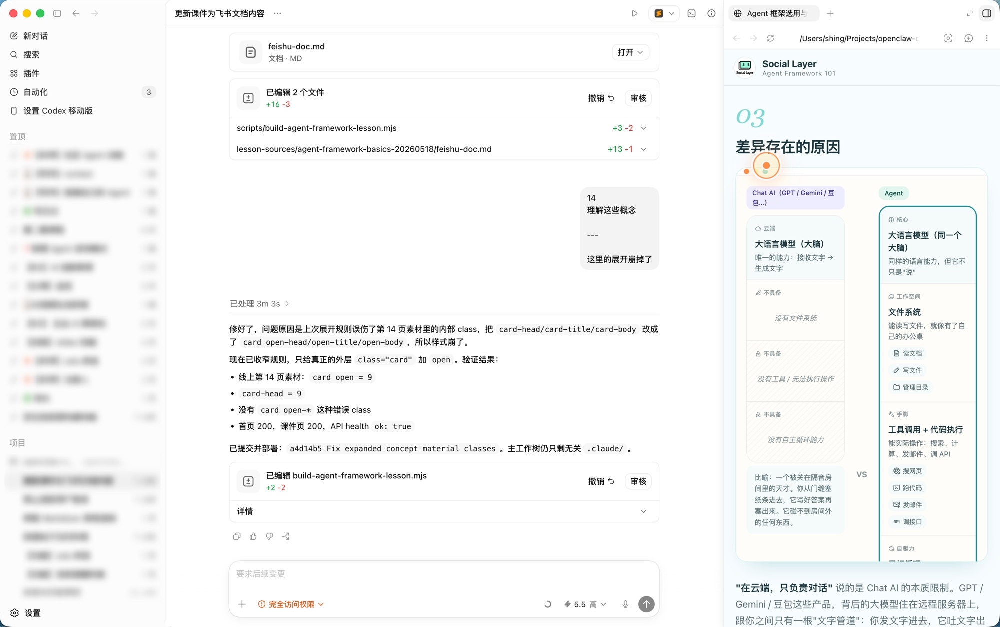
Codex 上手路径
官方 Codex
有海外访问条件 + ChatGPT Plus/Pro 订阅。最省心，账号更新安装都跟着 OpenAI 走。
Codex 转接模型版
暂无海外订阅。课程 Skill 包把 Codex、课程中转、本地 relay 和配置文件串起来。
Claude Code 上手路径
官方 Claude Code
能稳定访问 Claude + 有 Pro/Max/Team 或 Console 账号。安装后登录即可。
Claude 转接模型版
暂无官方 Claude 条件。课程 Skill 包准备 Git、Node.js、VS Code、Claude Code、CC Switch。
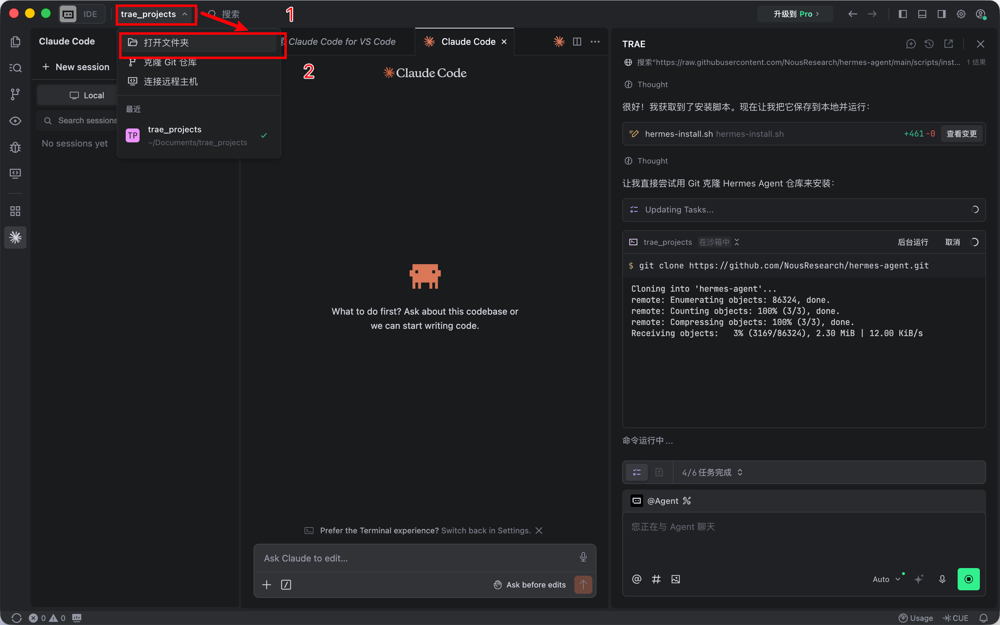
各框架安装一览
| 框架 | 安装方式 | 推荐模型 | 适合人群 |
|---|---|---|---|
| Codex | 桌面 App 安装 | GPT-5.5 | 有 ChatGPT 订阅 |
| Claude Code | 终端安装 + CC Switch | Claude / DeepSeek | 追求代码质量 |
| Trae + CC Switch | IDE 安装 + 插件 | DeepSeek 等 | 想用低成本模型 |
| Hermes Agent | 桌面端下载 | 任意 API | 愿意养自学习 Agent |
| OpenClaw | 让 Trae 帮装 | DeepSeek | 想快速体验 |
| Trae Solo | 可视化工作台 | 多模型 | 已经会用 Trae 的人 |
| WorkBuddy | 桌面端安装 | 内置 | 办公场景小白 |
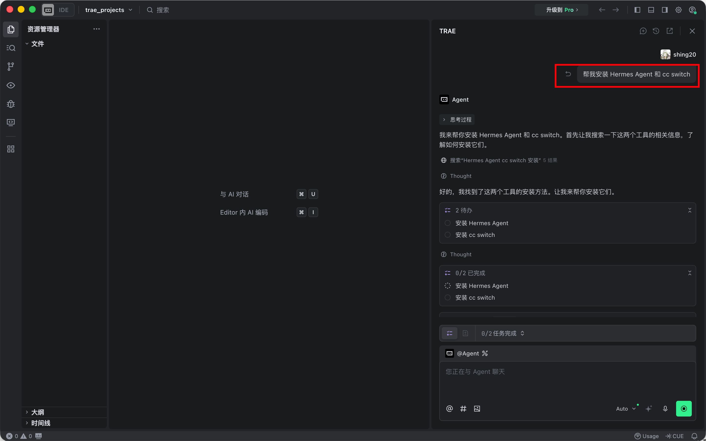
终端小知识
- 1
密码输入时看不到任何字符
正常！不是键盘坏了。终端输入密码时不会有任何显示（连 *** 都没有），输入完直接回车。
- 2
Ctrl+C = 万能中止
任何时候卡住或不知道发生了什么，按 Ctrl+C 回到正常状态。
- 3
上箭头翻历史
不想重新打长命令？按上箭头找回之前输入过的命令。
- 4
Tab 自动补全
打一半文件名或命令时按 Tab，自动补全剩余部分。
- 5
大量文字滚动不要慌
安装日志是正常的，大量输出不等于报错。
- 6
实在退不出来直接关窗口
不会爆炸。关了再打开就行。
第 5 幕 · 开始一个小项目
用一个低风险任务跑完准备环境→打开文件夹→下指令→看结果的完整链路
开始前的 Checklist
✅ 装好了 Agent
✅ 配好了 API
✅ 已经可以开始使用
如果还没决定好也完全没头绪，参考以下操作：安装 Trae → 让 Trae 帮你安装 cc switch 和 Claude Code → 去 DeepSeek Platform 注册账号获取 API Key → 让 Trae 引导你打开本机配置界面填入 Key → 在 Trae 上安装 Claude 插件。
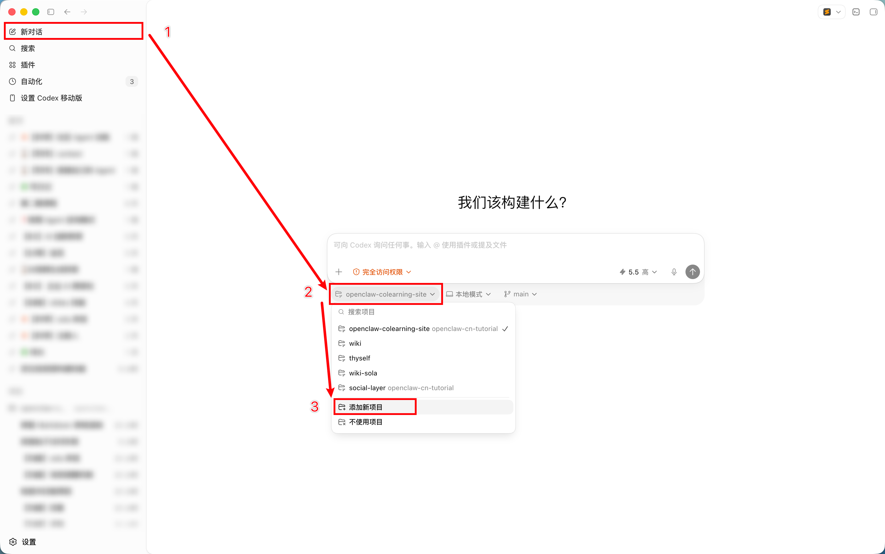
小任务：新媒体运营周报
用一个很小的新媒体周报任务，把前面讲过的 Agent 框架真正跑起来。先下载作业附件并解压，用你选择的 Agent App 打开工作文件夹。
第一步：打开工作文件夹
下载作业附件 zip 并解压，用 Codex / Claude Code / Trae 任意一种 Agent App 打开这个工作文件夹。
第二步：让 Agent 执行
告诉 Agent："请阅读当前文件夹里的所有文件，了解我这周的新媒体运营情况，参考上周周报格式，帮我生成本周运营周报（5/12-5/18）。回应老板的所有问题，分析爆款视频，给出下周建议。"
第三步：查看输出结果
Agent 会自动分析文件夹内的数据文件、上周周报格式、本周运营数据，生成完整周报并给出下周策略建议。
一个简单的判断标准：如果 AI 做完之后你还要亲自动手，那就是 Chat AI；如果它交给你的已经是最终结果，那就是 Agent。